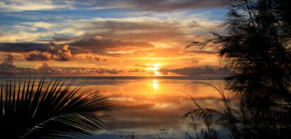

På vej hjem

Top 10 over de bedste oplevelser på turen
fredag den 28. marts 2008

I morgen starter vi vores lange hjemtur. 5 måneders drømmerejse er slut. Det er trist, men samtidig også i orden, da vi alle nu er klar til at vende hjem til vores vante rammer med kufferterne fulde af oplevelser. Vi har virkelig prøvet lidt af hvert, og vi har hver især vores favoritminder fra turen. Det har allerede været basis for mange sjove snakke om aftenen, og om nogle måneder er det sikkert andre ting der står klarest som de største oplevelser. Jeg vover dog alligevel pelsen og forsøger her at lave en top ti over de ting, jeg husker tilbage på som de mest spændende, sjove og mindeværdige oplevelser:
-
1.Sejlturen rundt i syd Thailand på de mange små øer Koh Lipong, Koh Mook og Koh Sukorn. Klarest står den primitive køretur rundt på Koh Sukorn, med besøg på en lokal pigeskole. Og så svømmeturen ind i Emerald Cave
-
2.Sejlturen rundt i Great Barrier Reef var fantastisk. Specielt Dykkene ved Lizard Island tidligt om morgenen
-
3.Ayers Rock i regnvejr og køreturen gennem ingenmandsland langs Mereenie Loop med en skøn trekkingtur i Kings Canyon
-
4.Sydney var en dejlig oplevelse og nytårsaften var helt speciel, det var også fedt at stå på toppen af harbour Bridge og se solen gå ned. Sydney er den skønneste by, vi har oplevet på hele turen.
-
5.Heron Island var bare helt fantastisk. Magen til dyreliv skal man lede længe efter. Natdykket og dykket med tre store Mantarays glemmer jeg aldrig.
New Zealand turen er svær, da der er så mange gode minder, men nogle ting står klarere end andre: -
6.Sejlturen på Doubtful Sound var en uforglemmelig naturoplevelse
-
7.Turen op til Siberia Valley, og fornemmelsen af at være helt alene i verden, da flyet fløj igen, var helt i top
-
8.Helikopterturen op på Skt Josef gletcheren i det klareste solskinsvejr
-
9.At få lov at flyve sin egen helikopter i Nelson var også ret spektakulært!
-
10.Tongariro Alpine Crossing var den flotteste trekkingtur på hele rejsen
-
11.Mindet om at dykke med de store bottlenose delfiner ved Poor Knights Islands giver stadig gåsehud
-
12. De utrolig smukke øer ude midt i Stillehavet og det rolige liv, der leves herude. Specielt Aitutaki har været en helt igennem dejlig oplevelse med sine smukke solnedgange og vilde stjernehimmel. En ferie i ferien. Skøn måde at slutte turen på.
Hov det blev vist til en top 12 i stedet, men det kunne faktisk ligeså godt have endt
som en top 50 :)
Der er også nogle ting, som har skuffet i forhold til forventningerne:
Regnskovsturen til Cape Tribulation blev ikke den naturoplevelse, jeg havde håbet, bl.a. fordi vi ikke kunne komme med på turene, da der var for få tilmeldte. Vi så dog saltvands krokodiller på en tur vi selvarrangerede, og det var ret sjovt.
Kangaroo Island skuffede fælt, men det skyldes bl.a. at en stor del af øen var brændt ned ugen inden, og de mest interessante steder derfor var lukket. Her skulle vi nok have valgt at aflyse.
Togturen tværs igennem Australien gav heller ikke helt den fornemmelse af landets størrelse, som jeg havde håbet. Og der er et godt stykke fra drømmen om den klassiske luksustogtur a la Orient Ekspressen til virkelighedens oplevelse.
Hvis jeg ser bort fra oplevelserne og fokuserer på hvad der har været rarest ved at være væk så længe på denne måde, er det imidlertid nogle andre ting, der dukker op:
Muligheden for at have tid til sine børn og mentalt overskud til virkelig at være sammen med dem igennem en længere periode er ubetalelig
Fornemmelsen af at bo på en enestående klode, der både er til at overskue, men som samtidig rummer så mange fantastiske steder og mennesker, at den er en uudtømmelig kilde til oplevelser, der hele tiden udvider ens horisont
Følelsen af at være uden for rækkevidde, når mobiltelefonen ikke virker i ugevis, og der heller ikke er noget fjernsyn, tror jeg er sund. Og samtidig har vi hele tiden været ret tæt på, da vi via nettet har kunne følge med, når vi havde lyst
Og så kommer jeg hjem med en viden om, at der findes andre måder at leve på, end den vi kender fra en presset hverdag med rigelig meget fart på: et andet tempo, et andet klima, andre kulturer, andre horisonter. Og det hele er ikke længere væk end en pakket kuffert og en flybillet. Det er sådan set meget rart at vide :)
Når det er sagt, så glæder jeg mig til at komme hjem til alle mine projekter og opgaver, til at samle mit liv op, hvor jeg slap det for 5 måneder siden. men det er ikke sidste gang, at vi rejser ud i verden. De næste rejsemål er allerede så småt ved at blive tegnet ind på kortet ...
/Tim
Solnedgangen fra vores terrasse i Aitutaki bliver svær at glemme. Stort set alle pallettens farver har været i brug og ikke to aftener har været ens.
Det er rent postkort :)